Подземная вселенная музея
Сюда метровагоны спускали через монтажный проём длиной более 22 метров, и это само по себе инженерное чудо. Экспозиция построена как «формула метро»: семь разделов, которые вместе объясняют, как метро устроено, как оно строилось и как работает каждый день.
Как устроен этаж: семь разделов идут по кругу, и каждый раскрывает одну грань метро — от проходческого щита до голоса диспетчера. В центре — макет станции, вокруг которого и строится весь маршрут.
Карта −1 этажа
Подземный уровень музея имеет форму подковы — его контуры повторяют очертания исторического гаража Константина Мельникова. Семь разделов идут по кругу, а в центре расположен макет станции. Ниже — схема расположения всех зон и экспонатов.
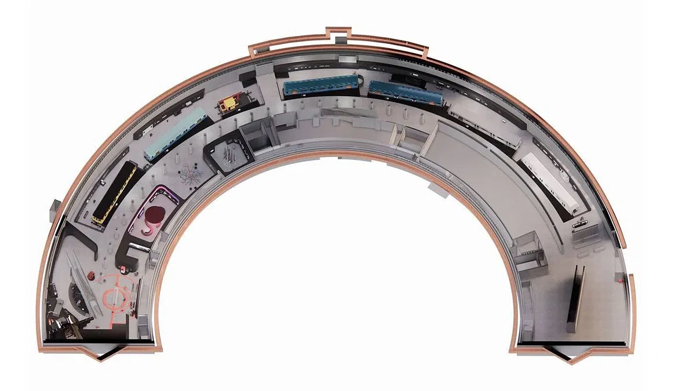
Что где находится
🛠️ Метрострой
Макет проходческого щита и рассказ о том, как строили и строят метро.
👷 Эпоха энтузиазма
Билеты, паспорта, награды и личные истории метростроевцев.
🚇 Подвижной состав
Шесть метровагонов и мотовоз АГМу — от типа В до «Москвы-2019».
🧭 Навигация
Подлинные указатели разных лет, включая знаменитое «Сапарёво».
🚪 Турникеты
От АКП-1 до АКП-73, а также жетоны разных лет.
🎛️ Управление
Пульт диспетчера ЕДЦ и привод автостопа ПАМ-2.
🏛️ Архитектура
Интерактивный макет станции в разрезе и «Голос метрополитена».
Метрострой: как строили и как строят
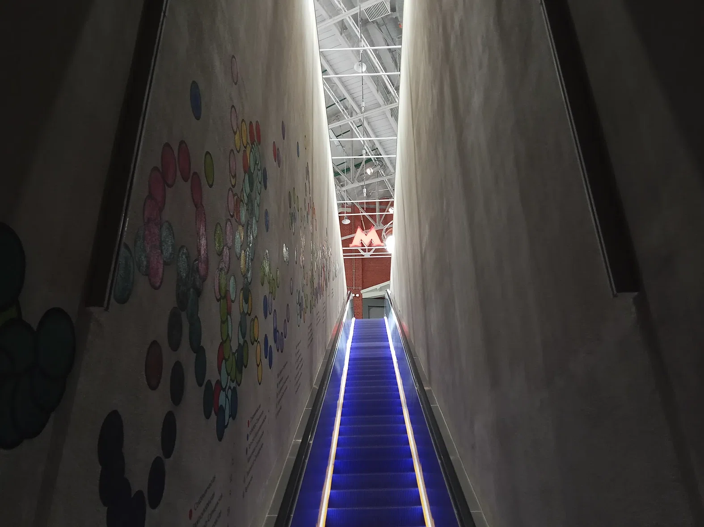
Эскалатор в сине-фиолетовой подсветке.
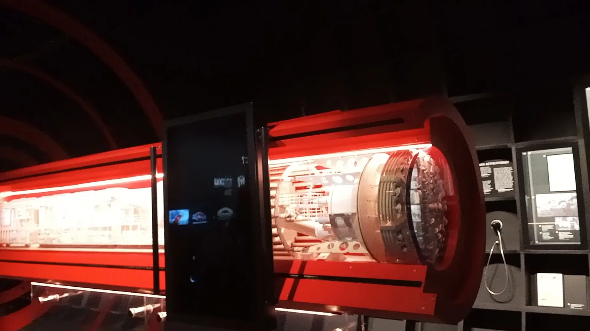
Макет в разрезе.
Спуск на −1 этаж — это уже часть экспозиции. Главный аттракцион этажа — макет проходческого щита в разрезе. В музее показан самый первый щит, купленный в 1930-е в Англии специально для строительства московского метро. Можно рассмотреть рабочий орган с резцами, механизмы для установки тюбингов и платформы.
Первая очередь Московского метрополитена строилась в основном вручную. Даже внедрение проходческого щита не позволило полностью механизировать процесс: проходчики разрабатывали грунт с помощью кирок и лопат. К маю 1935 года на Метрострое было занято до 75 тысяч человек.
Геология: геологическое строение Москвы отличается от подземных слоёв почвы в европейских столицах. Под Москвой накопились изменчивые и неустойчивые отложения четырёх ледниковых периодов. Недра российской столицы полны воды. Так что каждый участок строительства диктовал свой метод работы.
Методы строительства
🏗️ Открытый способ
На месте будущей станции рыли котлован, затем строили конструкции и засыпали.
🕳️ Закрытый способ
Через шахты, без вскрытия поверхности (самый трудоёмкий, но незаметный для города).
🧱 Траншейный способ
Разработан в Москве: сначала сооружали стену в грунте, затем выбирали породу под защитой этой стены.

Рудничный контактный электровоз.
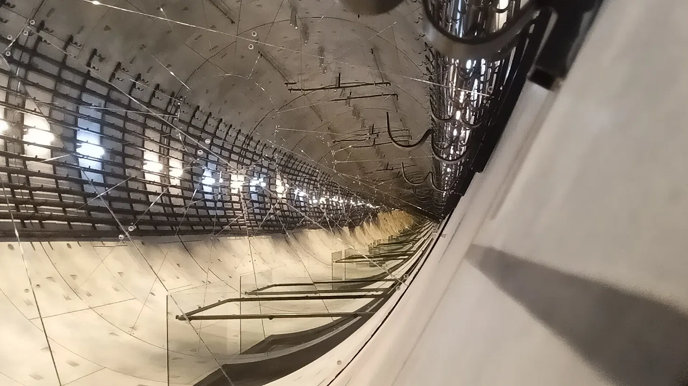
Макет туннеля.
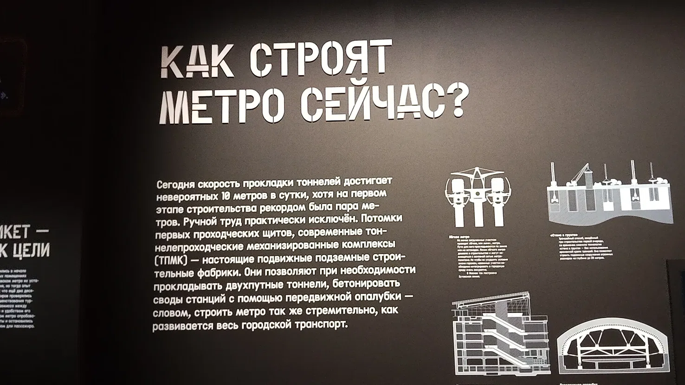
Как строят метро сейчас.
Эпоха энтузиазма: люди Метростроя
Билеты, паспорта, награды: Отдельный раздел посвящён тем, кто строил метро. В экспозиции — билеты ударников, паспорта, наградные знаки, грамоты и даже копия Ордена Красной Звезды, врученного Павлу Ротэрту за руководство первой очередью.
💬 Из воспоминаний
«Многие не имели представления, что такое метро, но слышали, что в СССР прежде не было ничего подобного. Этого хватило, чтобы тысячи записались добровольцами».
💬 Из воспоминаний
«Бригадирам-комсомольцам было легче, потому что все их подчинённые были комсомольцы. А партийцам приходилось сталкиваться со всякими настроениями в бригаде».
Представлен и распорядок дня метростроевца: комсомольцы-ударники приходили за 2 часа до начала работы, главный инженер Арбатского радиуса спускался в шахты в 10:00, а после второй смены добровольцы участвовали в перекладке трамвайного пути.
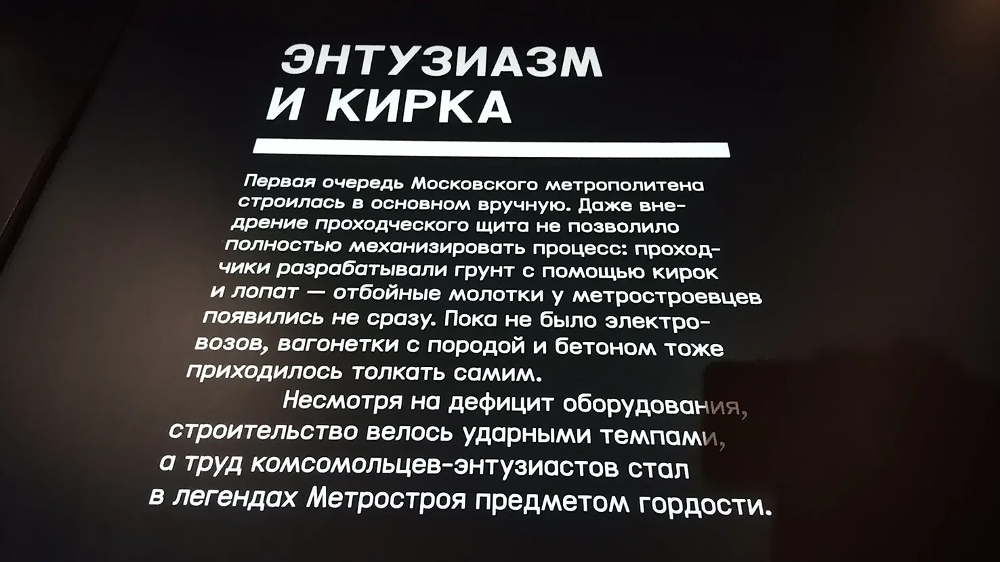
Инструменты метростроевцев.
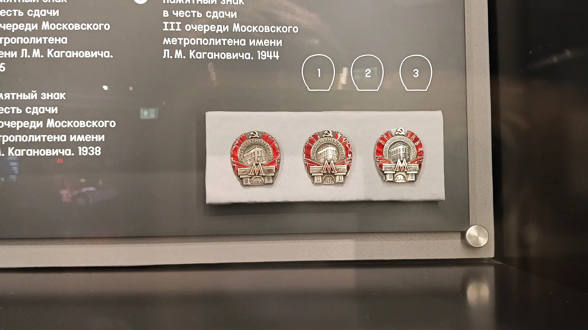
В честь сдачи очереди.
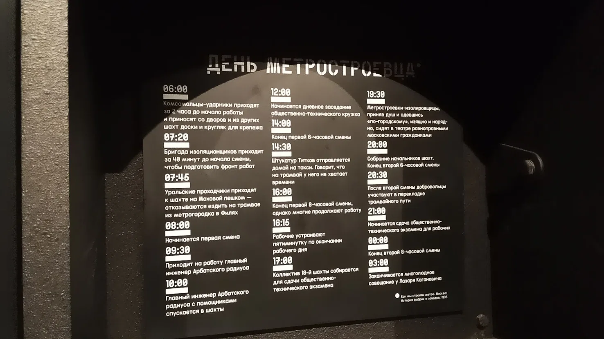
Праздничный день.
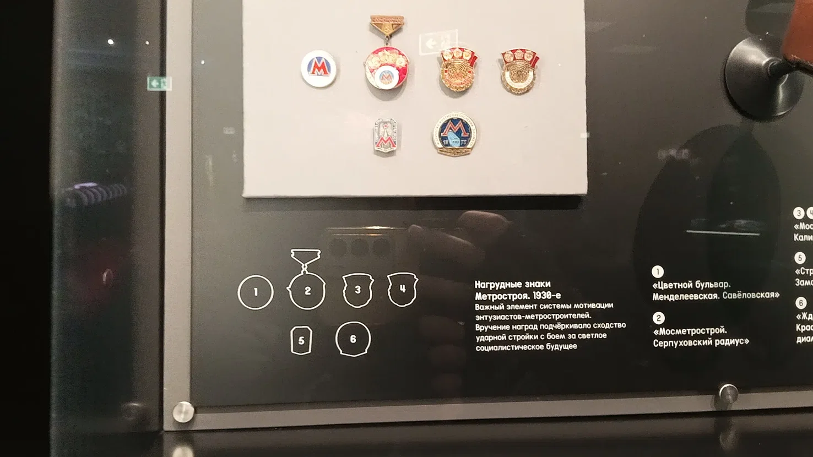
Знаки метростроевца.
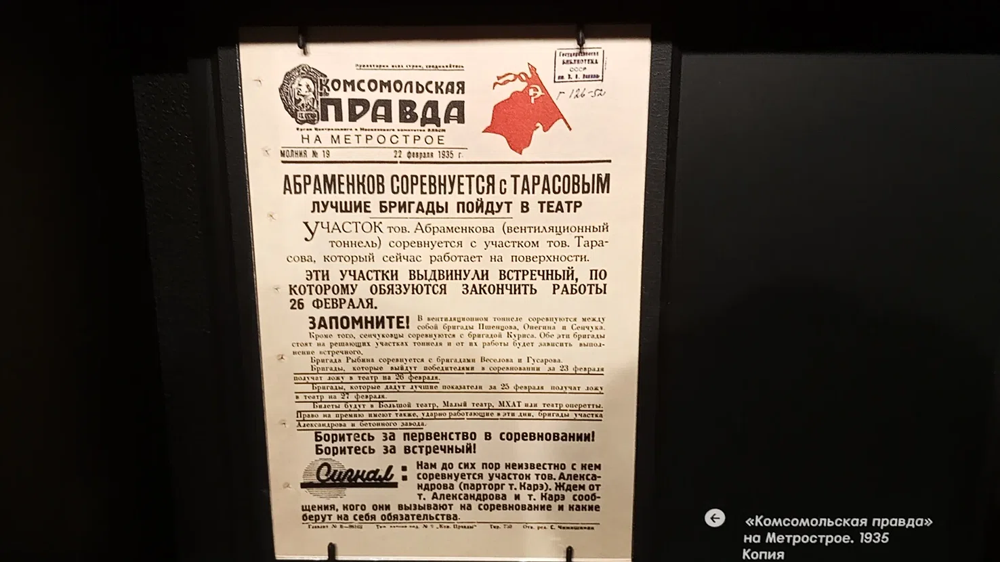
Газета на метрострое.
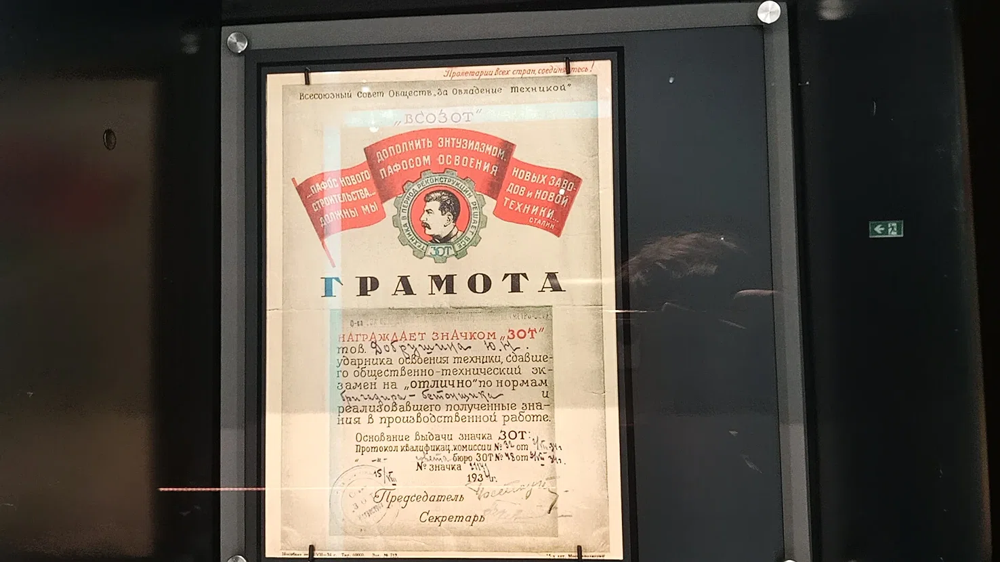
Исторический документ.
Подвижной состав: от «номерных» до «Москвы-2019»
В экспозиции представлены шесть метровагонов и мотовоз АГМу. Все вагоны можно рассмотреть не только снаружи, но и внутри.
Вагон типа В (1927)
Один из трёх сохранившихся вагонов берлинского метрополитена серии В4. Один из 120 экземпляров, вывезенных из Берлина в 1945 году.
Вагон типа Г (1954)
Первый вагон московского метро с электродинамическим тормозом. Именно этот тип вагона первым получил традиционную для советских метрополитенов сине-голубую окраску.
Вагон Еж3 (1973)
На этих вагонах устанавливались более мощные тяговые двигатели, а система широтно-импульсного регулирования обеспечивала плавное реостатное торможение.
Вагон 81-717 (1983)
Первый вагон метро, не имевший буквенного обозначения, за что получил прозвище «номерной».
Вагон 81-720 «Яуза» (2001)
Вагон, задуманный как прорывной по уровню технологических решений. Автоматическая система пожаротушения, асинхронные тяговые двигатели.
Вагон 81-765.4 «Москва-2019» (2019)
Первый вагон метро с крэш-системой для снижения рисков аварий, сенсорными экранами с картами метро и USB-портами.

Музейный экспонат.

Музейный вагон.
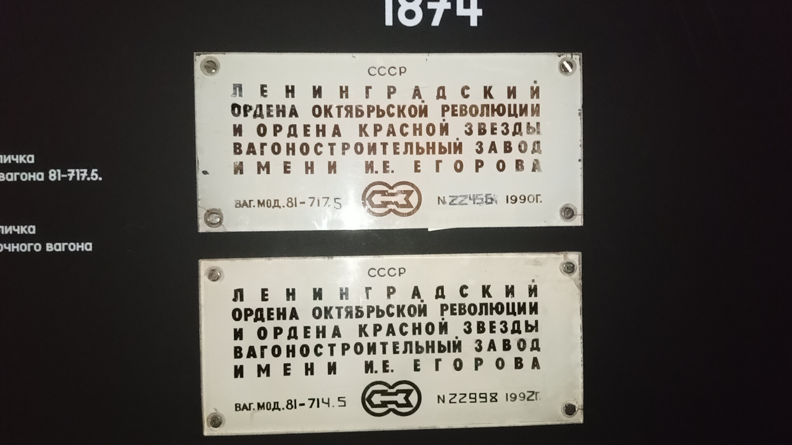
81-717.5/714.5(ЛВЗ).
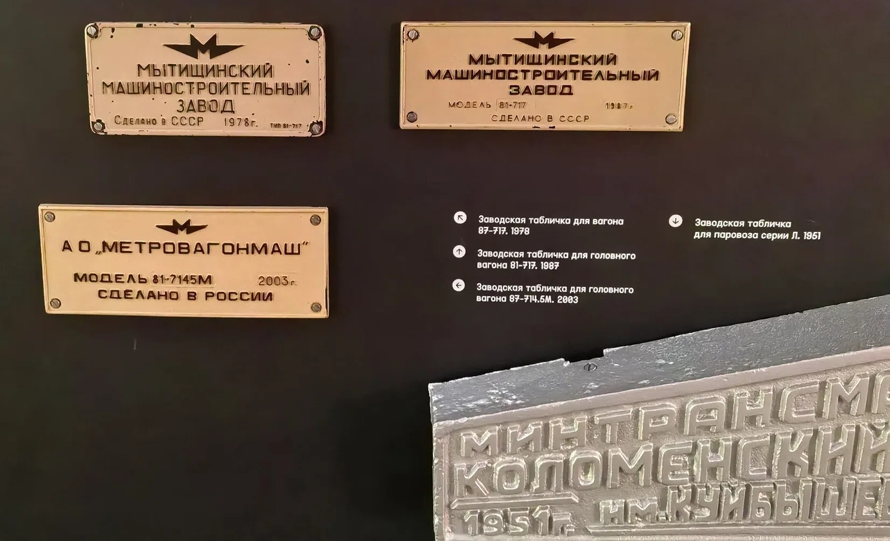
81-717(ММЗ) и 81-717.5М.

Вагон № 0021.

Автодрезина.
Турникеты и системы оплаты
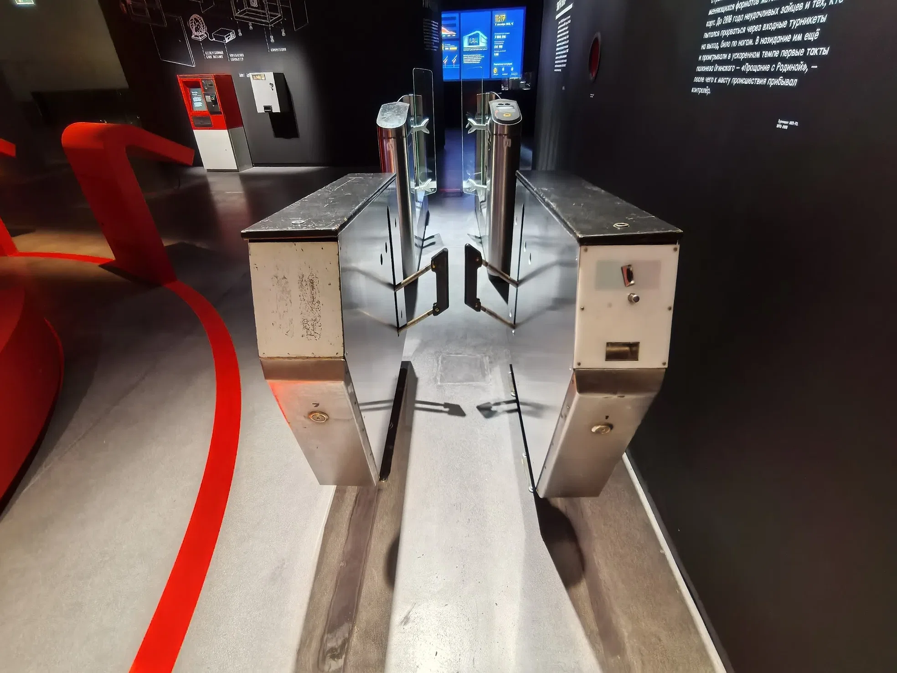
Исторические турникеты в экспозиции.
Осенью 1958 года в Московском метрополитене началось массовое внедрение автоматических контрольных пунктов АКП-1. «Нормально открытый» турникет, собранный в стильном деревянном корпусе, с лязгом преграждал дорогу пассажиру, если предварительно не опустить в него пятикопеечную монету.
С 1972 года на станциях ставили усовершенствованные АКП-73. Уже никакого дерева — только металл и немного резины. С этими турникетами московское метро прошло всю эволюцию системы оплаты. В экспозиции представлены жетоны разных лет, которые можно рассмотреть вблизи.
Управление: пульт диспетчера
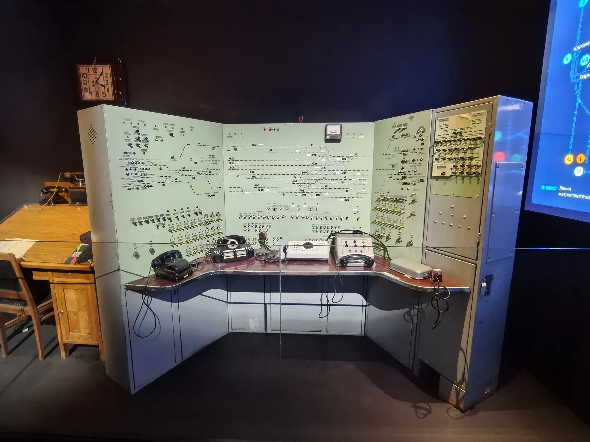
Зона воссоздаёт атмосферу Единого диспетчерского центра метро.
Посетители могут встать за пульт управления и узнать, как специалисты действуют в нештатных ситуациях. Московское метро унаследовало от железных дорог особое почтение к системам связи, сигнализации и управления движением.
Формула станции: устройство и архитектура

Позволяет рассмотреть станцию по слоям.
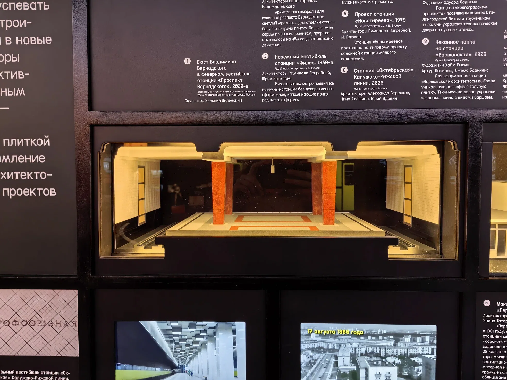
Филевская линия.
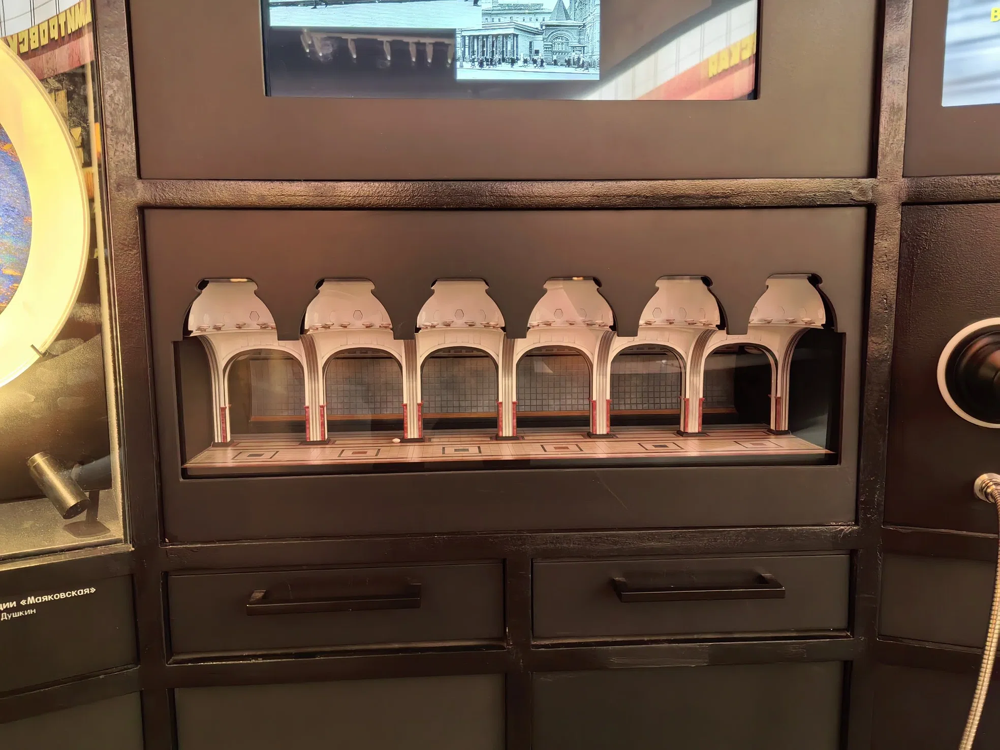
Внутреннее устройство.
Пассажирская платформа оказывается лишь небольшой частью сложной подземной конструкции. Вокруг неё скрыты мощные тяговые подстанции, вентшахты, обеспечивающие циркуляцию воздуха, машинные отделения эскалаторов и массивные противоатомные гермозатворы.
🎧 Голос метрополитена: Инсталляция позволяет услышать, как объявления звучали в разные годы: от первых записей до современных. В 1984 году произошло разделение оповещений на женский и мужской голоса.
Полный список экспонатов −1 этажа
| № | Модель | Узнать больше |
|---|---|---|
| 158 | В-4 | Подробнее → |
| 661 | Г | Подробнее → |
| 5946 | Еж3 | Подробнее → |
| 8535 | 81-717 (ЛВЗ) | Подробнее → |
| 0021 | 81-720 «Яуза» | Подробнее → |
| 65000 | 81-765.4 «Москва-2019» | Подробнее → |
| АГМу-13137 | АГМу (автодрезина) | Подробнее → |
Вернуться к основной странице музея:
🏛️ Музей Транспорта Москвы →«Метрополитен — подземное отражение города, символ его целостности, а также результат поиска решений в уравнении со многими переменными».